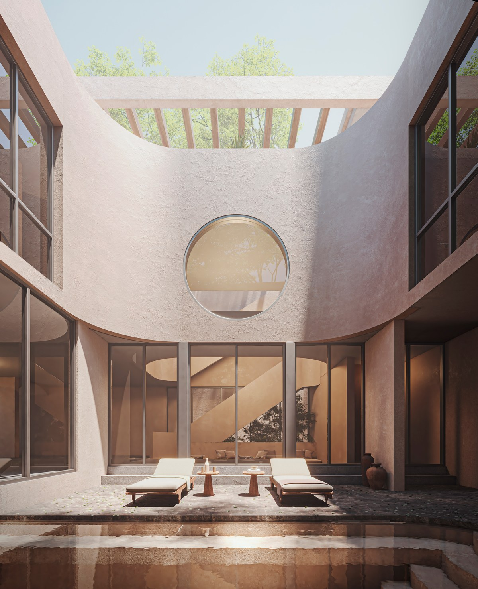

Cenote Day Plan from Tulum: Villa Guest Checklist

A cenote day can be one of the best memories of your Tulum trip — if the plan is simple. Most problems happen when guests try to visit too many spots in one day or underestimate transfer and preparation time.
Pick one main cenote focus
Instead of chasing quantity, choose one primary cenote and one optional backup. This lets you enjoy the experience without rushing every step.
Best timing strategy
- Leave early for smoother entry and calmer atmosphere
- Keep midday open for food and rest
- Return to villa before evening fatigue hits
What to bring (and what not to forget)
- Water and light snacks
- Quick-dry towel and change of clothes
- Dry bag for phones and small valuables
- Comfortable sandals or water shoes
- Simple cash backup for local stops
Suggested day flow
- 08:00–09:30: transfer and arrival
- 09:30–12:00: cenote experience
- 12:30–14:00: lunch + recovery break
- 14:30 onward: optional light stop or return to villa pool
For families and groups
Assign one person to logistics (timing, contact details, essentials check). Assign another to group comfort (hydration, rest breaks, regroup points). This single change improves day quality dramatically.
Mistakes to avoid
- Booking too many activities on cenote day
- Skipping hydration and sun pacing
- No backup plan for weather shifts
- Late start with high expectations
Use the Tulum Events Calendar when finalizing your week so your cenote day aligns with lower-friction travel windows.
Need help building a cenote day that fits your group perfectly?